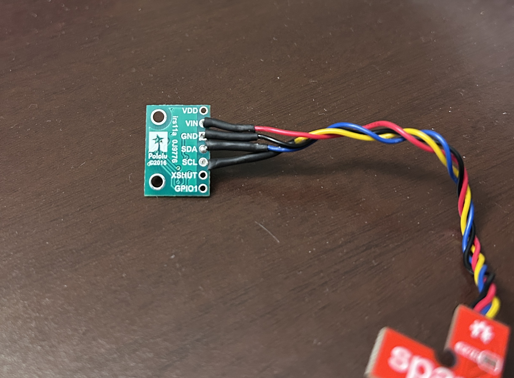
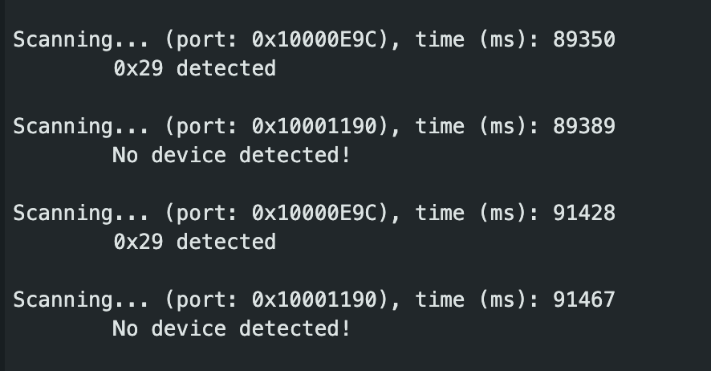
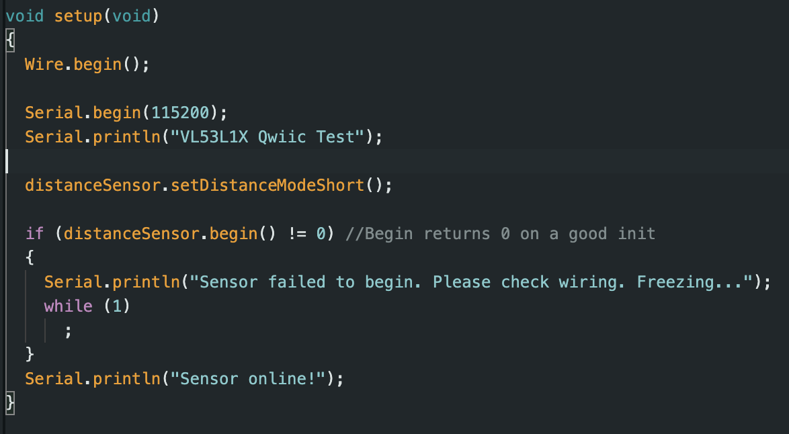
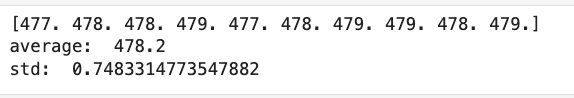
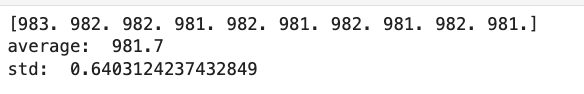
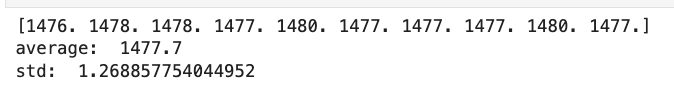
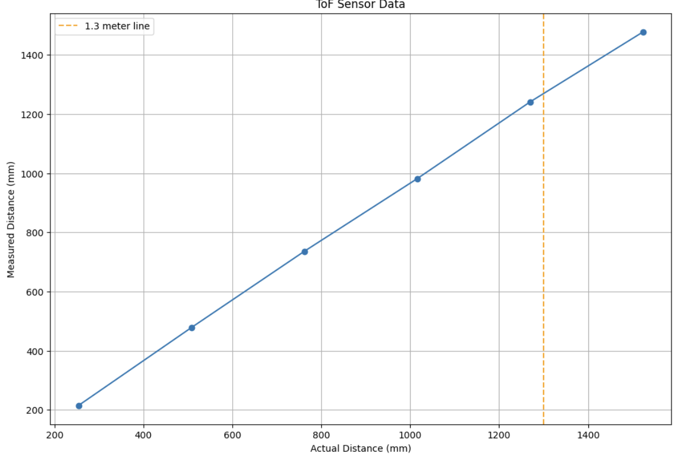
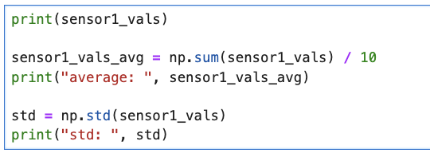
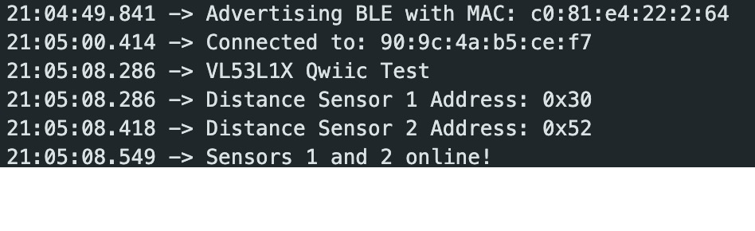

The purpose of Lab 4, was to get attach our motor driver controllers to our car and start working on open loop
control of our car. The motor drivers will be used to control our car.
Lab Set-up/Prelab
For the prelab of this class we learnt how to use an oscilloscope and connect our Artemis board to our motor
drivers. I also planned out which pins I would use on my artemis board for the two motor drivers and filled in the
wiring diagram with color coding.
Above is the wiring diagram for the two motor drivers. The input and output pins for each motor driver are
connected in parallel to eachother to maximize current drawn. The two VIN and GND pins on the motor drivers are
connected
to each other and then connected to the 850 mAh battery. One of the GND pins on one of the motor drivers is
connected to GND on the artemis. For the two input pins on each motor driver, I chose Pin 0, 1 and Pin 3, 5 on the
Artemis respectively.
The artemis and the motor drivers are connected to different batteries. The artemis uses a 750 mAh battery while
the motors use a 850 mAh battery. This allows each component to function independently and not affect each other.
Further, the motor drivers require more power than the artemis.
Task 1: Testing one motor driver
First, I soldered the input/output pins of one of the motor drivers. Then, I supplied power using a DC power
source and then tested the oscilloscope output for the driver. The waveform seen on the oscilloscope is seen
below. I /

Task 2: Testing the Wheels
To start collecting data with the ToF sensors, we downloaded the SparkFun VL53L1X 4m laser distance sensor
library. Then we ran the Example05_wire_I2C.ino code, and saw the Artemis scanning the I2C ports to find the
sensor. The address of this sensor was found to be 0x29. In the datasheet for the sensor, the address is listed as
0x52. However, since the rightmost bit is used to identify if data is read/write, it is ignored. Therefore, 0x52
is shifted to the right, resulting in address 0x29.

Task 3: Arranging all Components on the Car
The ToF sensor library has 3 available sensor modes: short, long and medium (only available with the Polulu
VL53L1X Library). Short mode has a maximum range of 1.3 m and is the least sensitive to ambient light. Medium mode
has a maximum range of 3m. Long mode
has a maximum range of 4m but is the most sensitive to ambient light. The short mode is more accurate and suffers
from lesser sensor noise. For this lab, I chose to use the short mode to test sensor accuracy. I modified the code
so that the sensor now uses short mode.

Some of the data collected from the sensor:



To test the accuracy of the sensor I collected data for 6 different distance readings ranging from 10 inches to 60
inches. For each
distance reading I took 10 data points and then took the mean of those as the final reading. I also calculated the
standard deviation of the data for each distance reading.

Python code used to calculate std. dev and mean:

I also found the ranging time, which is the time it takes between sensor measurements. I found this value to be
around 89 ms.
Task 4: Open Loop Control
Now, I connected both the sensors to the breakout board and ran the code again. I had to make sure to use the
XSHUT pin to manually set the address of one of the sensors. I chose to set this value to 0x30. Printing to the
serial monitor confirms that the two sensors are collecting data separately.

Additional 5000 Level Tasks
analogWrite() frequency
Infrared distance sensors come in several varieties, each with distinct advantages and limitations. Proximity IR
sensors use an emitter-receiver pair to detect object presence when the IR beam is interrupted, offering a simple,
low-cost solution for applications like garage door safety mechanisms, though they only provide binary detection
rather than actual distance measurements. Time-of-Flight (ToF) IR sensors calculate precise distances by measuring
how long it takes for emitted IR light to return after bouncing off objects, providing superior accuracy and range
but at higher cost and complexity. IR triangulation sensors emit light at an angle and use geometry to determine
distance based on where reflected light hits a detector, striking a balance between the simplicity of proximity
sensors and the precision of ToF technology, though their accuracy diminishes with increasing distance.
Lowest PWM Discussion
Conclusion
This lab was very useful in getting familiar with working with ToF data.
It also helped in reinforcing the different methods of interacting with and sending/receiving data using both our
sensors. This will
be
very useful in future labs where being able to get accurate distance readings of obstacles will be crucial for our
robot to safely navigate environments.
References
I referenced Nila Narayan and Mikayla Lahr's work for Lab 4.